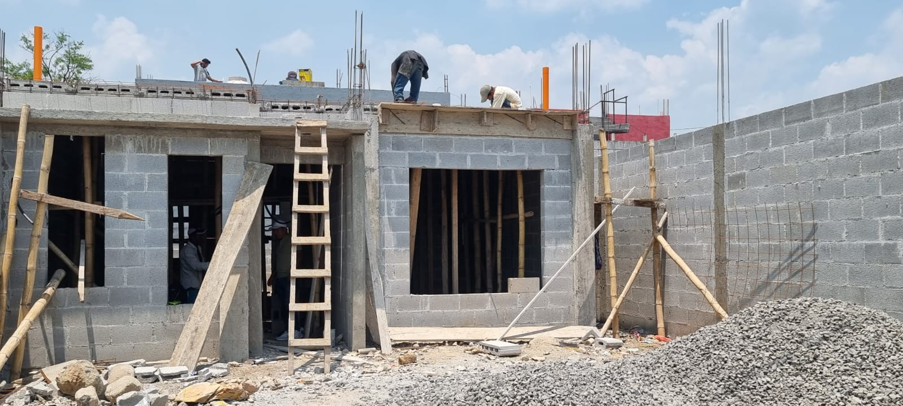
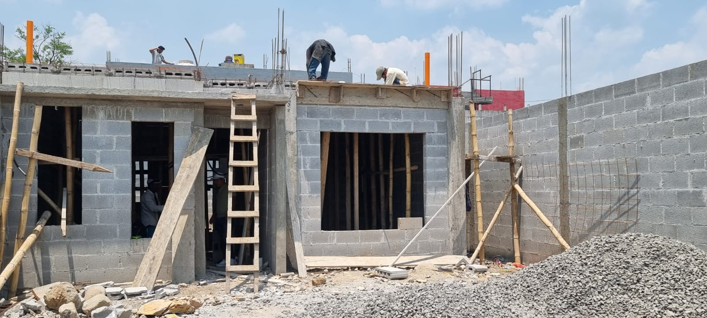

Cielo Falso
Calculadora de Materiales
Cotízalo con nosotros Constructora JAGRAN
 +502 5961-1497
+502 5961-1497
Guia de Construcción
- Materiales y herramientas necesarios:
- Placas de Thermoport (120cms x 60cms).
- Perfiles principales (main tee) de 12 pies (3.66 metros).
- Perfiles transversales (cross tee) de 4 pies (1.22 metros).
- Perfiles angulares de 10 pies (3.05 metros).
- Ganchos de suspensión.
- Tijera para metal o Sierra para metal.
- Tachuelon para concreto.
- Martillo.
- Nivel de burbuja
- Cinta de métrica.
- Cuchilla para cortar.
- Gafas de seguridad y guantes.
- Preparación y Medición:
- Fijar el perfil angular:
- Instalación de perfiles principales (Main Tee):
- Colocación de los cross tee:
- Instalación de las planchas de thermoport:
Asegurar que la superficie de las paredes en las que colocara el angular esten limpias y libres de obstrucciones.
Usa una cinta métrica para medir el área del techo donde deseas instalar el cielo falso. Marca los puntos de referencia en el techo con un lápiz o marcador no olvide revisar el nivel en cada pieza colocada.
Fije los angulares en el contorno de la estructura, es decir, en las paredes donde planea colocar el cielo falso con apoyo de las marcar previamente colocadas.
Instala los main tee de 3.66 metros a lo largo con apoto de ganchos de suspensión de ser necesario. Asegurese que estén nivelados y ajustados a la longitud necesaria. Para cortarlos, utiliza una sierra para metal o tijera para metal.
Coloca los cross tee de 1.22 metros entre los main tee para formar una cuadrícula. Asegúrate de que estén alineados correctamente y que se crucen en ángulo recto. Ajusta la longitud de los cross tee si es necesario, cortándolos según sea necesario.
Coloca las planchas de thermoport en la cuadrícula formada por los main tee y cross tee. Asegúrate de que estén ajustadas y encajen correctamente. Puedes cortar las planchas de thermoport para que encajen en espacios irregulares utilizando una cuchilla afilada.